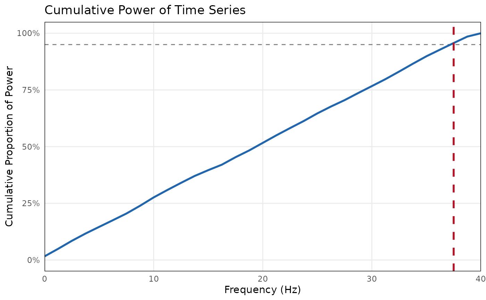

Evaluate Signal Power and Suggest Downsampling Rate
Source:R/signal_power.R
evaluate_signal_power.RdCalculates the Power Spectral Density (PSD) of continuous time series using Welch's method. It determines the frequency below which a specified proportion of the total signal power is captured and recommends an optimal integer downsampling factor that yields a clean sampling rate.
Arguments
- x
A numeric vector, a list of numeric vectors, or a data frame. If a data frame is provided, all numeric columns will be evaluated.
- sample_rate
A single positive number indicating the sampling rate in Hertz.
- threshold
A single numeric value between 0 and 1 indicating the cumulative proportion of power to capture. Default is 0.95 (95 percent).
- quiet
A logical indicating whether to suppress console output. Default is `FALSE`.
Value
A list of class `"signal_power_res"` containing the calculated cutoff frequencies, the recommended integer downsampling factor, and the resulting target frequency. Call `plot()` on the result to visualize cumulative power.
Examples
# PSD-based downsampling guidance for one signal
ps <- evaluate_signal_power(sim_dyad$x_A, sample_rate = 80)
#>
#> ── Signal Power Evaluation ─────────────────────────────────────────────────────
#> 95% of signal power is captured below 37.5 Hz.
#> ! The signal contains high frequencies requiring a sampling rate near or above the original 80 Hz. Downsampling is not recommended.
ps
#> $primary_cutoff_freq
#> [1] 37.5
#>
#> $theoretical_min_rate
#> [1] 75
#>
#> $recommended_downsample_factor
#> [1] 1
#>
#> $recommended_target_rate
#> [1] 80
#>
#> $recommended_bin_width_sec
#> [1] 0.0125
#>
#> $psd_results
#> $psd_results$Signal
#> $psd_results$Signal$freqs
#> [1] 0.00 1.25 2.50 3.75 5.00 6.25 7.50 8.75 10.00 11.25 12.50 13.75
#> [13] 15.00 16.25 17.50 18.75 20.00 21.25 22.50 23.75 25.00 26.25 27.50 28.75
#> [25] 30.00 31.25 32.50 33.75 35.00 36.25 37.50 38.75 40.00
#>
#> $psd_results$Signal$cum_power
#> [1] 0.01620053 0.04958386 0.08454863 0.11660403 0.14602443 0.17519644
#> [7] 0.20487554 0.23914563 0.27603913 0.30862085 0.34001340 0.37043402
#> [13] 0.39612303 0.42035764 0.45326666 0.48300307 0.51645049 0.54991972
#> [19] 0.58168552 0.61274681 0.64645507 0.67680178 0.70488481 0.73634007
#> [25] 0.76685499 0.79762077 0.83093059 0.86523770 0.89838799 0.92772000
#> [31] 0.95681182 0.98523634 1.00000000
#>
#> $psd_results$Signal$cutoff
#> [1] 37.5
#>
#>
#>
#> $threshold
#> [1] 0.95
#>
#> $is_multi
#> [1] FALSE
#>
#> attr(,"class")
#> [1] "signal_power_res" "list"
# Visualize the cumulative power spectrum
plot(ps)
